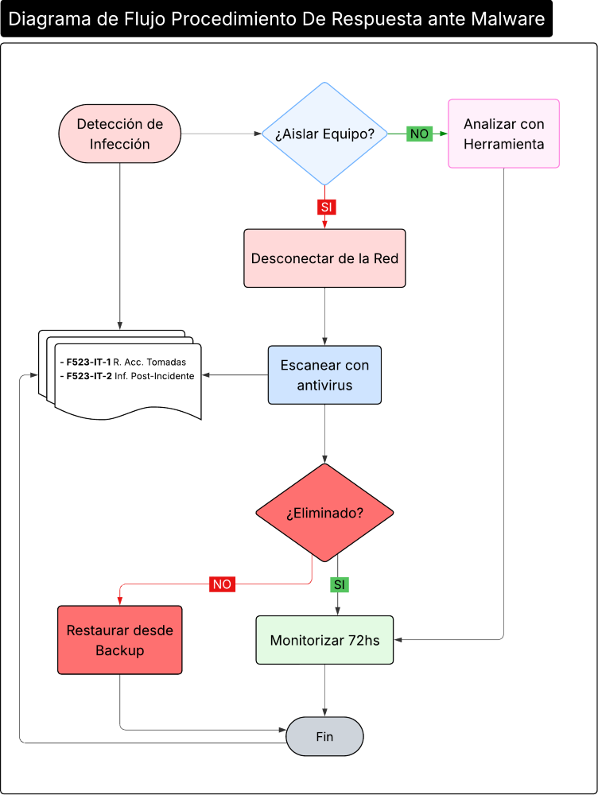

Procedimiento de Respuesta contra Malware
1 OBJETIVO
Establecer el proceso para responder de manera eficaz y ordenada ante incidentes de malware, minimizando el impacto en las operaciones y garantizando la recuperación de sistemas, en cumplimiento con ISO/IEC 27001:2022, TISAX y clientes automotrices.
2 ALCANCE
Aplica a todos los incidentes confirmados o sospechosos de malware en sistemas críticos (SIP 4.0, app interna, redes industriales).
3 PROCEDIMIENTO DE RESPUESTA
3.1 Detección y Reporte
- Detección: Monitorización vía EDR, reportes de usuarios.
- Reporte Inmediato:
Notificar al DIT vía mail
- itprodismo@prodismo.com
- MS Teams STI
- F161-IT-1 Formulario de Reporte de Eventos por Departamento
o sistema de ticket interno Prodismo (STI)
o formulario de reporte
o vía Whatsapp al Equipo de IT
3.2 Contención Inmediata
- Aislamiento: Desconectar equipo de red (físicamente o vía VLAN).
- Bloqueo: Deshabilitar cuentas comprometidas.
3.3 Análisis e Investigación
- Identificación: Determinar tipo de malware (ransomware, spyware).
- Impacto: Evaluar sistemas afectados y datos comprometidos.
3.4 Erradicación
- Eliminación: Remover malware usando herramientas especializadas.
- Restauración: Recuperar sistemas desde backups.
3.5 Recuperación
- Reconexión: Reintegrar sistemas a la red tras verificación.
- Monitorización: Vigilar comportamientos anómalos post-recuperación.
3.6 Comunicación
- Interna: Notificar a dirección y áreas afectadas.
- Externa: Reportar a clientes/reguladores si hay fuga de datos (según ley aplicable).
3.7 Lecciones Aprendidas
- Revisión Post-Incidente: Identificar causas raíz y mejorar controles.
- Actualización: Refinar procedimientos y capacitaciones.
3.8 Diagrama de Flujo de Procedimiento de Respuesta ante Malware

Diagrama de flujo del procedimiento de Respuesta ante Incidentes de Malware
4 REGISTROS
5 REVISIONES DEL DOCUMENTO
- Revisión anual y después de cada incidente mayor.
| Rev. N° | Fecha | Descripción |
|---|---|---|
| 0 | 25/8/2025 | Primera Emisión del documento |
| 1 | 2/3/2026 | Revisión completa del documento |